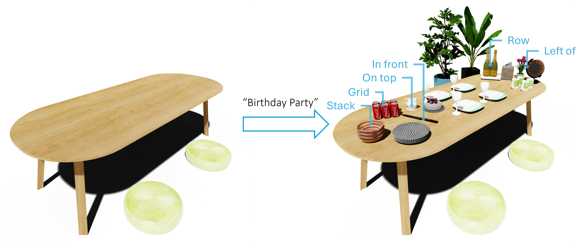
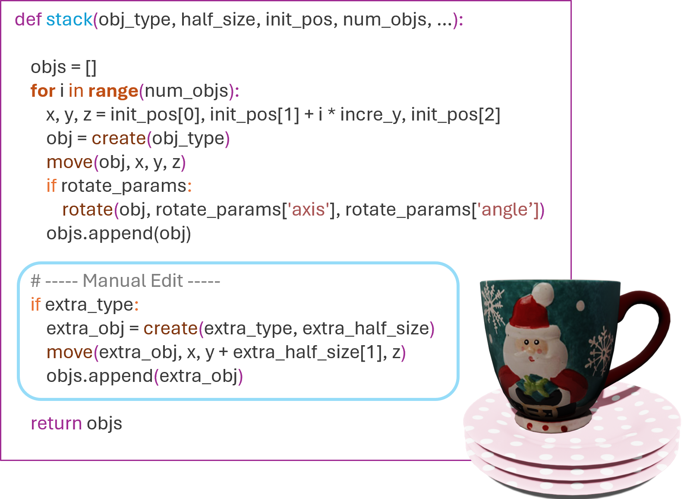

Despite recent advances in text-to-3D generation methods, generation of multi-object arrangements remains challenging. Current methods exhibit failures in generating physically plausible arrangements that respect the provided text description.
We present SceneMotifCoder (SMC), an example-driven framework for generating 3D object arrangements through visual program learning. SMC leverages recent advances in large language models (LLMs) and program synthesis to overcome these challenges by learning visual programs from example arrangements. These programs are generalized into compact, editable meta-programs. When combined with 3D object retrieval and geometry-aware optimization, they can be used to create object arrangements varying in arrangement structure and contained objects.
Our experiments show that SMC generates high-quality arrangements using meta-programs learned from few examples. Evaluation results demonstrate that object arrangements generated by SMC better conform to user-specified text descriptions and are more physically plausible when compared with state-of-the-art text-to-3D generation methods.
The SceneMotifCoder (SMC) framework operates in two phases. Top: In the learning phase, given an object arrangement and its text description, SMC extracts a naïve program which is refined into a more structured motif program. The spatial patterns in the motif are then abstracted into a meta-program with reusable arguments to enable editing and generalization. Bottom: In the inference phase, given a text description as input, SMC selects a meta-program from the program library. Then, a new object arrangement is generated by writing a function call that executes the meta-program with appropriate arguments. Mesh retrieval and geometry-aware optimization then produces the final output which is a new object arrangement conforming to the input description.
Example of meta-program for surround motif learned from the text and arrangement pair in blue box. The arrangements at the bottom are generated from the meta-program given the input text shown above each arrangement. Note the significant variations in object counts and types, all captured by human-interpretable and editable calls to the meta-program.
The text at each row on the left is the input at inference time. The arrangements generated by SceneMotifCoder better respect the input text in terms of number and type of objects present, and exhibit more plausible spatial configurations and object appearance.
MVDream
[Shi et al. 2023]
GraphDreamer
[Gao et al. 2024]
LayoutPrompter
[Lin et al. 2024]
Ours
A wineglass left of a wine bottle
Three plates circularly surrounding a large bowl
A stack of three bowls
A pile of three towels
A cup in front of a coffee maker
A rectangle grid of four potted plants
Our SceneMotifCoder framework generalizes the motifs exhibited by input examples to produce diverse arrangements with differing object categories, object counts, and spatial configurations.
We populate an indoor scene with dense, realistic object arrangements by instantiating a variety of learned motifs. The dining table shown here is populated by instantiating arrangements from six motif types. Note that the small object arrangements are essential for conveying specific scene states — e.g., a birthday party
We edit a learned stack motif meta-program to introduce an additional object category at the top of the stack. The edited meta-program preserves the generality of the original while adapting the motif with a user modification. On the right is a generated arrangement of "a stack of three plates and a cup" using this edited meta-program.

@article{??????????,
author = {Tam, Hou In Ivan and Pun, Hou In Derek and Wang, Austin T. and Chang, Angel X. and Savva, Manolis},
title = {{SceneMotifCoder: Example-driven Visual Program Learning for Generating 3D Object Arrangements}},
year = {2024},
eprint = {0000.00000},
archivePrefix = {arXiv}
}